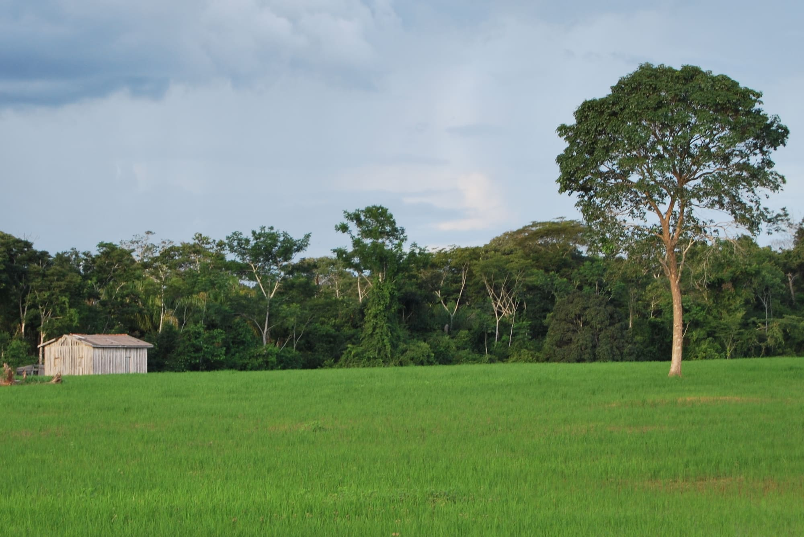

Início / Informativos Técnicos
Acompanhamento mensal do setor agropecuário: bovinocultura de corte e de leite, além dos boletins técnicos. Escolha a edição, veja a capa e baixe o PDF.
As publicações mais recentes de cada categoria, em destaque.
Todo o arquivo mensal. Escolha a categoria, o ano e a forma de visualizar.
Edições semestrais, com mais profundidade que o informativo mensal.